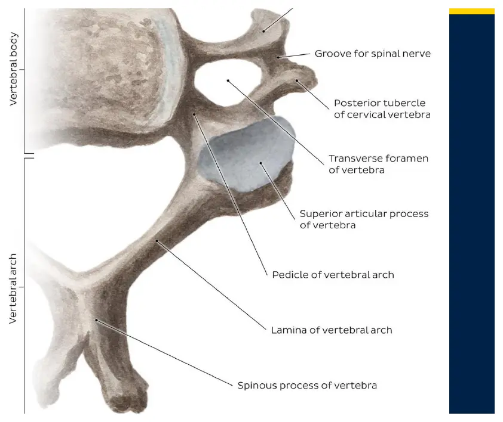

Courses › Human Anatomy › Module 11
Human Anatomy · 6111
Module 11 — Cervical Spine
Topics: 11.1 Osteology, Joints & Ligaments • 11.2 Cervical Muscles • Innervation & Function
📖 How to Use These Notes
- Best used with the lecture playing — keep these open, follow along, and add your own notes as you watch
- Lecture banners mark the start of each topic and run in the same order as the videos
- 🎙 Callouts = direct insights from the instructor's transcript
- ★ Tips = exam-relevant content or things the instructor told you to prepare
- Figures are taken directly from the module's slide decks
- Each topic ends with its own Quick-Reference Glossary
- Written from last year's recordings — if a lecture has been re-recorded or resequenced, Canvas wins
- Watch the lecture videos in your own Canvas module — links are cohort-specific
- Two patient cases with answer keys ship with this module — whiplash/instability and cervical radiculopathy. Both are summarised at the end
- Module 7's deep back muscles and Module 10's cranial nerves both come home to roost here — expect callbacks
- The cervical palpation skills list lives in this Drive folder
TOPIC 11.1
Cervical Osteology, Joints, and Ligaments
1. The Seven Vertebrae
- Three atypical: C1 atlas · C2 axis · C7 vertebra prominens. Four typical: C3–C6.

| Vertebra | Signature features |
|---|---|
| C1 — Atlas | No body, no spinous process — a ring of anterior + posterior arches joined by lateral masses (the load-bearers, in place of a body). Anterior tubercle anchors the ALL; the anterior arch's posterior surface carries a facet for the dens. Kidney-shaped superior facets cup the occipital condyles; the second-longest transverse processes in the neck act as rotation levers. Its huge vertebral foramen admits the cord fresh from the foramen magnum |
| C2 — Axis | The dens (odontoid process) projects superiorly with an articular facet — the pivot the atlas and head rotate around. Pedicles, laminae, a strong spinous process |
| C3–C6 — Typical | Small bodies (least weight to bear) · large triangular vertebral foramen (the cervical cord enlargement for the upper limbs) · uncinate processes on the superolateral bodies · transverse foramina for the vertebral artery, with anterior + posterior tubercles and a groove for the spinal nerve · short bifid spinous processes |
| C7 — Vertebra prominens | The long, palpable spinous process — your landmark for counting |
- Facet orientation: 45° between the transverse and frontal planes — superior facets face posterosuperiorly, inferior facets anteroinferiorly. That near-horizontal tilt is what gives the neck the greatest motion variety in the spine.
2. The Craniovertebral Joints
| ATLANTO-OCCIPITAL (C0–C1) | ATLANTO-AXIAL (C1–C2) |
|---|---|
| Paired condyloid articulation: occipital condyles in the concave, medially-tilted superior facets of the atlas | Three synovial joints: one median (dens vs the atlas ring anteriorly and the transverse ligament posteriorly — a PIVOT joint) + two lateral gliding/plane joints between the lateral masses |
| No intervertebral disc (none until C2–C3) | Meniscoids, not discs, fill the incongruent margins |
| Long anteroposterior axis of the condyles → primary motion FLEXION-EXTENSION (the nod) + a little lateral flexion | Primary motion: ROTATION — the atlas carries the head around the dens (the "no" joint) |
| High bony congruity → stable with relatively little ligament help |
- Uncovertebral joints (of Luschka): the uncinate processes of C4–C7 articulating with the bevelled inferior margins of C3–C6, sitting just anterior to the intervertebral foramen. They guide flexion-extension, limit lateral flexion — and with degenerative disc narrowing they arthritise and can irritate the exiting spinal nerve.
- Facet (zygapophyseal) joints: same synovial design as the rest of the spine, at the 45° cervical angle.
3. Ligaments
| Shared with the rest of the spine | Cervical notes |
|---|---|
| Anterior longitudinal ligament | Runs to the occiput, via the anterior tubercle of C1 |
| Posterior longitudinal ligament | Starts at C2 — above that it becomes the tectorial membrane |
| Ligamentum flavum · interspinous · intertransverse | All present but weakly developed in the neck |
| Supraspinous ligament | Ends at C7 — continuing upward as the nuchal ligament |
| Craniovertebral ligament | Runs / restrains |
|---|---|
| Anterior atlanto-occipital membrane | Anterior arch → foramen magnum's front rim; with its ligament, limits extension |
| Posterior atlanto-occipital membrane | Posterior arch → posterior rim; a minor flexion restraint |
| Alar ligaments | Dens → medial occipital condyles, bilaterally. Limit contralateral rotation and lateral flexion — you'll test their integrity clinically in MSK3 |
| Apical ligament | Dens apex → foramen magnum. Minimal restraint |
| Cruciform ligament | The cross: transverse ligament of the atlas (lateral mass → lateral mass, arching behind the dens) + longitudinal bands |
| Tectorial membrane | The PLL's superior continuation, broadening from C2's posterior body to the anterior foramen magnum |
| Nuchal ligament | C7 spinous process → external occipital protuberance + posterior tubercle of C1; prevents hyperflexion and anchors neck extensors |
The transverse ligament is the one that keeps people alive
- It pins the dens against the anterior arch of C1
- If it fails, C1 translates anteriorly and the space for the cord narrows — spinal cord compression at the highest level
- This is why upper-cervical instability screening precedes any cervical manual therapy you'll ever learn
Topic 11.1 — Quick-Reference Glossary
| Term | Definition |
|---|---|
| Atlas (C1) | Ring; lateral masses instead of a body; cups the occiput |
| Axis (C2) | Owns the dens — the rotation pivot |
| Vertebra prominens (C7) | The palpable counting landmark |
| Uncinate process | Superolateral body lip forming the uncovertebral joint |
| Transverse foramen | Vertebral artery's staircase (C6→C1) |
| 45° facets | The cervical orientation; most mobile region of the spine |
| OA joint | C0–C1 — the "yes" (nod) joint |
| AA joint | C1–C2 — the "no" (rotation) joint; median pivot + two lateral gliders |
| Alar ligaments | Dens → occiput; limit contralateral rotation/side-bend |
| Transverse ligament of the atlas | Holds the dens; failure = cord compression |
| Tectorial membrane | PLL continued to the skull |
| Nuchal ligament | Supraspinous continued; hyperflexion brake and muscle anchor |
TOPIC 11.2
Cervical Muscles — Anterior, Posterior, Suboccipital
1. Anterior Muscles
| Muscle | O → I | Action | Innervation |
|---|---|---|---|
| Platysma | Skin/fascia around the clavicle → mandible + angle of the mouth | Depresses mandible and mouth angle; tenses neck skin | CN VII |
| Rectus capitis anterior | Lateral mass/TP of atlas → basilar occiput | OA flexion (the nod down) | Ant. rami C1–C2 |
| Rectus capitis lateralis | TP of atlas → jugular process of occiput | Bilateral: OA stabilisation · unilateral: lateral flexion | Ant. rami C1–C2 |
| Longus capitis | Anterior tubercles of TPs C3–C6 → basilar occiput | Bilateral: head flexion · unilateral: ipsilateral rotation | Ant. rami C1–C3 |
| Longus colli | Multi-part, inferior → superior along the anterior column | Bilateral: neck flexion · unilateral: ipsilateral side-bend, contralateral rotation | Mid-lower cervical ant. rami |
| Sternocleidomastoid | Sternal head (manubrium) + clavicular head (medial ⅓ clavicle) → mastoid process | Unilateral: ipsilateral side-bend + CONTRAlateral rotation · bilateral: upper-cervical extension with lower-cervical flexion; elevates sternum/clavicle | CN XI (spinal accessory) |
| Scalene | O → I | Action | Roots |
|---|---|---|---|
| Anterior | Anterior tubercles C3–C6 → rib 1 at the scalene tubercle (anterior to the subclavian groove) | Side-bend; elevates rib 1 (accessory breathing — Module 9) | C4–C6 |
| Middle | Posterior tubercles → rib 1, posterior to the subclavian groove | Same | C3–C8 |
| Posterior | Posterior tubercles C4/5–C6/7 → rib 2 | Side-bend; elevates rib 2 | C6–C8 |
Clinical spotlight — thoracic outlet syndrome
- Numbness/tingling into the arm from compression of the brachial plexus or subclavian vessels, at any of three narrows:
- 1. The scalene triangle — plexus + subclavian artery sandwiched between anterior and middle scalenes
- 2. The costoclavicular space — clavicle over rib 1 (posterior scalene pulling rib 2 up narrows it further)
- 3. Under pec minor — the subpectoral space, returning in the upper-extremity modules
- Module 7's rib-1 grooves and scalene tubercle were the setup for exactly this
2. Suboccipital Group — the Posterior Micro-Movers
| Muscle | O → I | Unilateral / bilateral action |
|---|---|---|
| Rectus capitis posterior major | SP of C2 → lateral inferior nuchal line | Ipsilateral rotation / head extension |
| Rectus capitis posterior minor | Posterior tubercle of C1 → medial inferior nuchal line | Ipsilateral rotation / head extension |
| Obliquus capitis superior | TP of C1 → between the nuchal lines | Ipsilateral side-bend / extension |
| Obliquus capitis inferior | SP of C2 → TP of C1 | Ipsilateral rotation (spins the atlas on the dens) |
- All four are supplied by the posterior ramus of C1 — the suboccipital nerve — and all anchor on the inferior nuchal line territory Module 7 promised would matter.
3. Posterior Muscles — the Module 7 Reunion
- Already yours from Module 7: trapezius, levator scapulae, rhomboid minor (superficial back); iliocostalis cervicis, longissimus cervicis/capitis, spinalis cervicis/capitis (erector spinae); semispinalis thoracis, multifidus, rotatores (transversospinalis). Review their cards there.
| New in the neck | O → I | Action |
|---|---|---|
| Splenius capitis | Nuchal ligament + SPs C7–T3/4 → mastoid + lateral superior nuchal line | Bilateral: head/neck extension · unilateral: ipsilateral side-bend + rotation |
| Splenius cervicis | SPs T3–T6 → TPs C1–C3 | Same pattern, neck-only — the head comes along |
| Semispinalis capitis | Articular processes C4–C7 + upper thoracic TPs → between the nuchal lines | Bilateral: head retraction + extension · unilateral: ipsilateral side-bend |
| Semispinalis cervicis | Upper thoracic TPs → cervical SPs | Extension; ipsilateral side-bend |
4. Innervation Logic and Function Summary
| ANTERIOR MUSCLES | POSTERIOR MUSCLES |
|---|---|
| Anterior rami of the cervical nerves — from the level where the muscle lives (rectus capitis group C1–C2, longus capitis C1–C3, scalenes by their attachment levels) | Posterior rami — C1's posterior ramus (suboccipital nerve) runs all four suboccipitals |
| Exceptions: SCM and trapezius take CN XI | Cervical nerves exit ABOVE their same-numbered vertebra through C7; C8 exits below C7 — the numbering fact both patient cases lean on |
| Motion | Producers |
|---|---|
| OA flexion (nod) | Rectus capitis anterior · longus capitis · SCM assist · supra/infrahyoids |
| OA extension | Rectus capitis posterior major + minor · obliquus capitis superior · splenius capitis · longissimus capitis · trapezius |
| Lateral flexion | Unilateral rectus capitis lateralis, obliquus superior, scalenes, SCM, splenii, semispinalis |
| Rotation | Sort by geometry: origin posterior to the dens axis → ipsilateral (splenius, suboccipitals, obliquus inferior) · pull crossing anteriorly → contralateral (SCM, semispinalis capitis, longus colli) |
| Neck flexion / extension | Anterior muscles flex, posterior extend — the colli/cervicis/capitis suffixes tell you what moves |
Topic 11.2 — Quick-Reference Glossary
| Term | Definition |
|---|---|
| Platysma | CN VII neck-skin sheet; depresses the mouth angle |
| Longus capitis vs colli | Head-flexor (ipsilateral rotator) vs neck-flexor (contralateral rotator) |
| SCM rule | Ipsilateral side-bend, contralateral rotation; CN XI |
| Scalene triangle | Anterior + middle scalenes + rib 1; plexus and artery inside |
| Thoracic outlet syndrome | Compression at scalene triangle, costoclavicular space, or under pec minor |
| Suboccipital triangle | RCP major, obliquus superior + inferior; C1 posterior ramus |
| Splenius group | The bandage muscles — ipsilateral rotators/extenders |
| Semispinalis capitis | The head-retractor between the nuchal lines |
| Suboccipital nerve | Posterior ramus of C1 |
| Nerve-root numbering | Exit above same-numbered vertebra; C8 below C7 |
PATIENT CASES
Whiplash Instability and Cervical Radiculopathy — With the Answer Key's Logic
Case 1 — 28-Year-Old, Rear-End MVC, 3 Days Out
Presentation
- Head thrown forcefully forward and back; immediate neck pain, "head feels heavy," a sensation of INSTABILITY turning the head, occipital-base headaches
- No numbness/tingling, no LOC · guarded posture, minimal active rotation · no imaging yet
| Question thread | The key's answer |
|---|---|
| Upper cervical anatomy | C0 condyles nod on C1; ring-shaped C1 has no body or SP; C2's dens is the rotation pivot that must be held in place by ligaments |
| Which ligament prevents anterior translation of C1 on C2? | The transverse ligament of the atlas — pinning the dens to the anterior arch |
| Alar ligaments' role | Dens → occiput; limit rotation and side-bending |
| Why ligament injury without fracture? | Ligaments restrain motion rather than absorb force — they fail below the force needed to break bone. Rapid flexion-extension stretches or tears the C1–C2 stabilisers |
| Dens fracture vs ligament tear | Either one disrupts the pivot; both mean instability until imaging clears her |
Case 2 — 45-Year-Old, Neck Pain Radiating to Thumb and Index Finger
Presentation
- Two months of gradual neck pain with sharp shooting pain into the right arm, thumb and index finger, intermittent tingling in the same strip
- Worse with prolonged computer work and looking down · forward head posture · guarded extension and right rotation
| Question thread | The key's answer |
|---|---|
| Root exit pattern | Cervical roots exit above their same-numbered vertebra (C6 root between C5 and C6); C8 between C7 and T1 |
| Foramen boundaries | Anterior: body + disc · posterior: facet joint · above/below: pedicles |
| Disc structure | Annulus fibrosus (concentric strength rings) around the nucleus pulposus (gel core for load distribution) |
| Why posterolateral herniations hit roots | The PLL is narrower laterally — disc material escapes posterolaterally, right where the root sits |
| What narrows the foramen | Disc-height loss, bulge/herniation, facet hypertrophy, osteophytes, soft-tissue thickening |
| Which root? | C6 — the thumb and index finger ARE the C6 dermatome |
| Forward head posture's role | Lower-cervical flexion + upper-cervical extension shifts loading → disc compression and facet stress → less foraminal space |
Cases — Quick-Reference Glossary
| Term | Definition |
|---|---|
| Whiplash | Rapid flexion-extension loading of the cervical restraints |
| Upper cervical instability | Transverse/alar ligament compromise; screen before treating |
| Annulus fibrosus / nucleus pulposus | Ring wall / gel core of the disc |
| Posterolateral herniation | The common direction, past the laterally-narrow PLL |
| C6 dermatome | Thumb + index finger |
| Foraminal stenosis | Disc, facet, and osteophyte narrowing of the root's exit |
| Forward head posture | Lower-C flexion + upper-C extension; loads discs and facets |